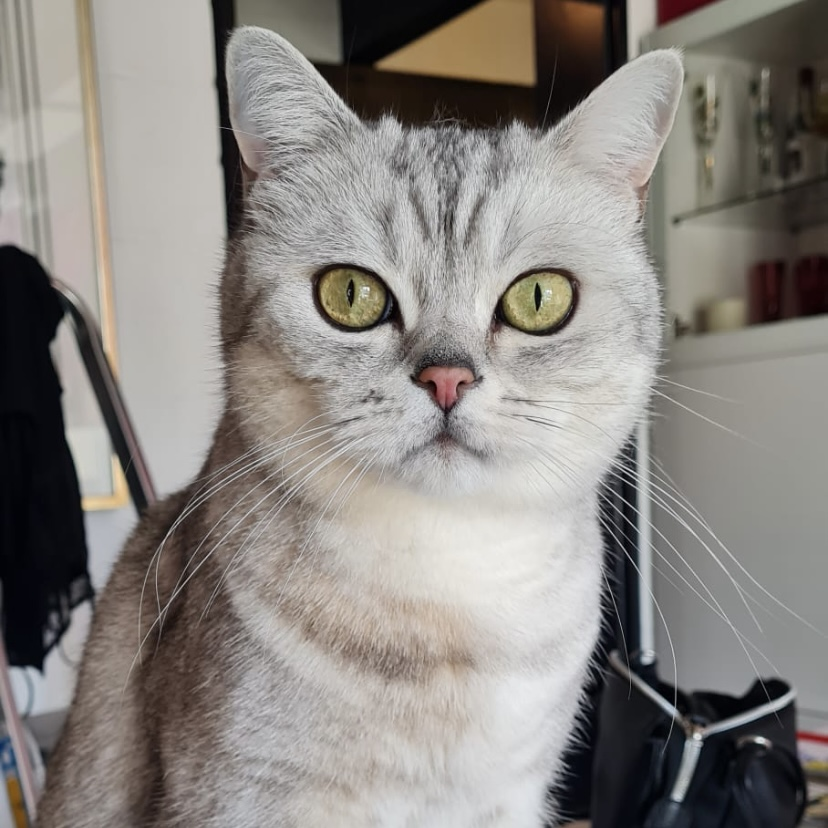
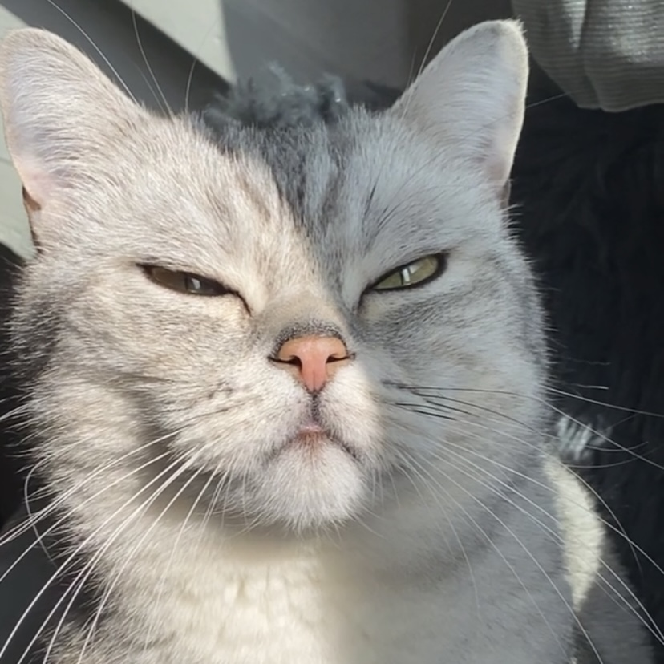

Das ist mein kleiner Sushi.
Komische Grimassen gibts auch bei Katzen.
Er spielt natürlich gerne...
...und sitzt überall mal rum.

Ist er nicht hüsch? :)
Kuscheln muss auch sein.
'Unauffällig' neben die frische Wäsche hocken.
Das Süßeste auf der Welt!!
Raubtierchen
Da waren wir beide noch sooo klein.
Hier waren wir schon älter.
Sicherstellen, dass man auch in den Koffer kommt.

Sonne blendet natürlich.
Beobachten tut er auch gerne.
Mama sauber putzen.
und vorallem: viiieeeel schlafen.